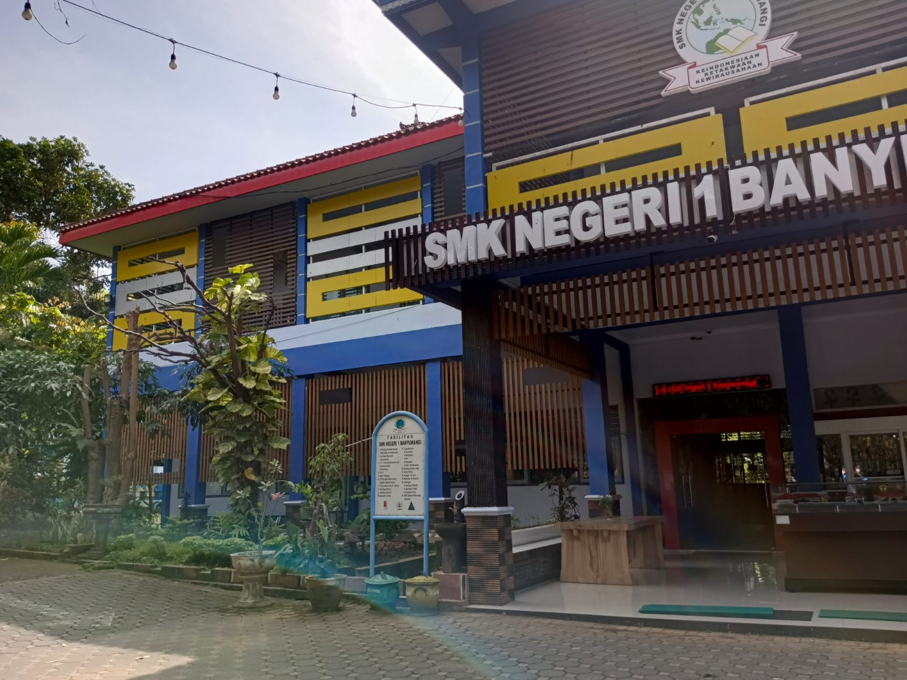
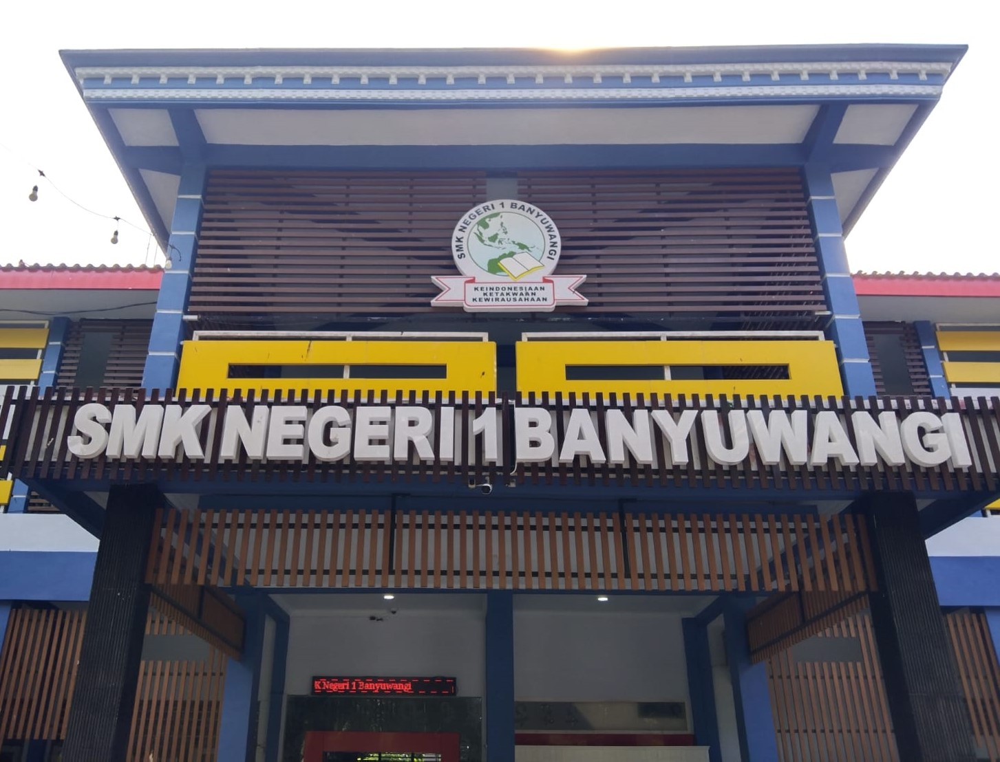

FRONT OFFICE
Beranda
Struktur
Fasilitas
FAQ
STRUKTUR KEPENGURUSAN
FRONT OFFICE
Front Office adalah garda terdepan
dalam melayani kebutuhan sekolah.
Dalam pelayanan tersebut Front Office
telah melibatkan banyak orang yang
terstruktur dalam bidang masing masing

Struktur Organisasi SMKN 1 Banyuwangi
Struktur Organisasi Tata Usaha SMKN 1 Banyuwangi
Struktur Organisasi Tim Perencanaan Berbasis Data SMKN 1 Banyuwangi
Struktur Organisasi Badan Layanan Usaha Daerah (BLUD) SMKN 1 Banyuwangi
